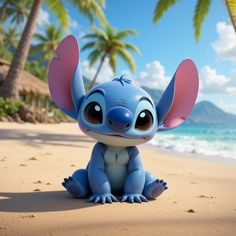
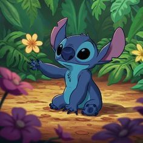

Вот я, красавчик!


Что я умею (список моих талантов)
- Озорной (это когда я случайно ломаю твой дом)
- Пушистый (меня можно тискать, я не кусаюсь... сильно)
- Инопланетный (я знаю, где находится твой холодильник)
- Любит гавайские песни (пою громко, соседи в восторге)
- Верный друг Лило (но если она меня разозлит, я спрячу её тапки)
Куда сбежать от Лило (и от её уроков)
Мои документы (да, я официальный инопланетный эксперимент)
Мои характеристики (не для правоохранительных органов)
| Имя |
Стич (или "Ой, мама, что это?!") |
Эксперимент 626 |
| Вид |
Коала (маскировка 10 уровня) |
|
Мой любимый уголок (там я прячу орехи)
Стич - это генетический эксперимент, созданный Джамбой.
Несмотря на свою разрушительную природу, он нашел свою семью (Охана) на Гавайях вместе с Лило и Нани.
Я очень озорной и пушистый. Люблю гавайские песни и кокосы.
И если ты не дашь мне кокос, я съем твой тапок. Это не угроза, это факт.
Эксперимент 626 (или "Ой, всё, я сдаюсь")
Стич
Меню Стича
Стич любит гавайскую пиццу и кофе. (Особенно если это чужая пицца и чужой кофе)
Важное предупреждение
Если вы видите пушистого синего пришельца, который ест ваши тапки — не паникуйте. Это я. Просто дайте мне кокос.
- Первый тапок (съеден)
- Второй тапок (будет съеден, если я проголодаюсь)
- Третий тапок (пока цел, но это ненадолго)
Стич — это не просто эксперимент, это часть семьи. И да, я умею читать мысли. Твои мысли сейчас: "Когда он уже перестанет ломать мой дом?"
Погладь меня (кнопка есть, а меня нет)